전자계약서
견적 내용으로 계약서를 만들고 서명 링크를 보내면, 손님이 폰으로 서명하고 서명된 계약서 PDF 가 메일로 옵니다.
우리홈페이지주소/contract.html?admin=1언제 쓰나요
- 견적이 확정되어 계약을 맺을 때 — 만나지 않고도 손님 폰으로 서명을 받습니다.
- MC · 가수를 우리가 섭외할 때(출연 계약)도 같은 화면에서 씁니다.
관리자용 화면(주소 끝이 ?admin=1)은 「관리자 화면」 잠금이 먼저 나옵니다. 관리자 모드와 같은 대표 암호를 넣으면 열리고, 한 번 넣으면 그 기기가 기억해서 다음부터는 바로 열립니다. 손님에게 보내는 화면(서명 링크 · 손님용 견적서)은 암호 없이 열립니다.
이렇게 하세요
견적서에서 「이 견적으로 계약서 작성」
견적서 화면 아래 단추를 누르면 새 창에 계약서가 손님 정보 · 항목 · 할인이 채워진 채 열립니다. 위쪽에 「관리자 · 작성 모드」라고 보이면 맞습니다.
업무 문서함의 「전자계약서」로 들어왔다면 「견적서에서 가져오기」를 펼쳐 견적서 주소를 붙여넣고 견적 내용 불러오기.
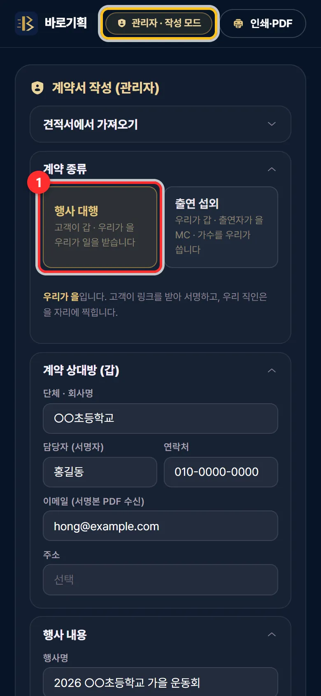
① 계약 종류 — 보통은 「행사 대행」 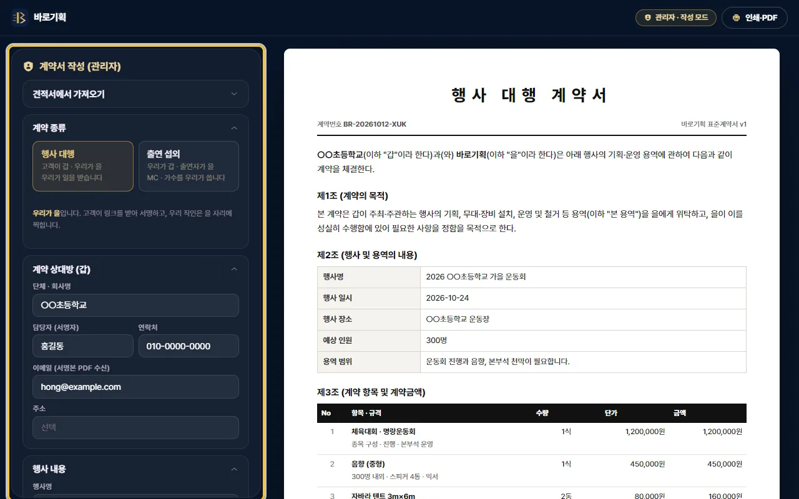
PC 에서는 왼쪽이 작성 칸, 오른쪽이 계약서 계약 종류를 고릅니다
- 행사 대행 — 손님이 갑, 우리가 을. 우리가 일을 받는 보통의 계약입니다.
- 출연 섭외 — 우리가 갑, 출연자가 을. MC · 가수를 우리가 쓸 때입니다. 개인(3.3% 원천징수)인지 소속사 · 사업자(부가세 10%)인지 고릅니다.
계약 상대방 · 행사 내용을 확인합니다
「담당자 (서명자)」와 「행사명」은 꼭 있어야 링크가 만들어집니다. 「이메일 (서명본 PDF 수신)」에 손님 메일이 있어야 손님도 서명본을 받습니다.
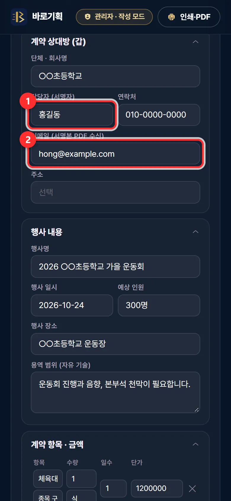
① 서명할 사람 ② 서명본을 받을 손님 메일 금액 · 부가세 · 계약금을 정합니다
「부가세」: 별도(항목 금액에 10% 를 더함, 기본) 또는 포함(이미 들어 있음). 「계약금 비율 (%)」은 기본 30%, 지급 시기도 바꿀 수 있습니다. 취소 · 위약 규정과 특약은 아래 칸을 펼쳐 고칩니다.
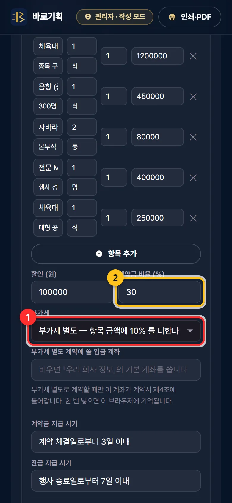
① 부가세 별도 / 포함 ② 계약금 비율 처음 한 번 — 입금 계좌
맨 아래 「우리 회사 정보 · 서버 설정」을 펼쳐 입금 계좌를 확인하고 회사 정보 저장을 누르세요. 그 브라우저가 기억합니다(다른 폰 · PC 에서는 한 번 더).
「고객 화면 미리보기」로 확인 → 「고객 서명 링크 만들기」
고객 화면 미리보기는 손님이 볼 화면을 새 창으로 보여 줍니다(여기서는 서명이 저장되지 않습니다). 이상 없으면 고객 서명 링크 만들기.
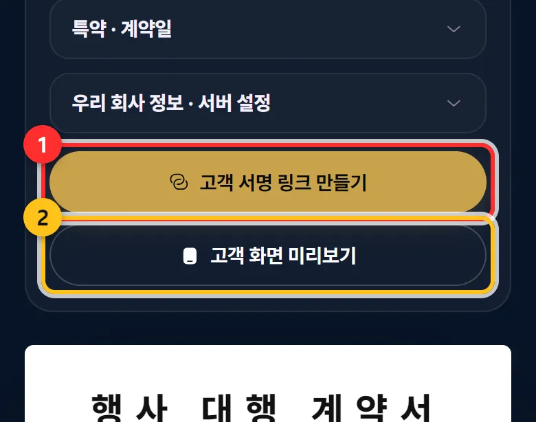
① 서명 링크 만들기 ② 미리보기 링크를 손님에게 보냅니다
「고객 서명 링크」 창에서 링크 복사, 카톡·문자로 보내기, 문자 앱 열기, 이메일로 보내기 중 편한 것을 고르세요. 안내 문장이 같이 들어갑니다.
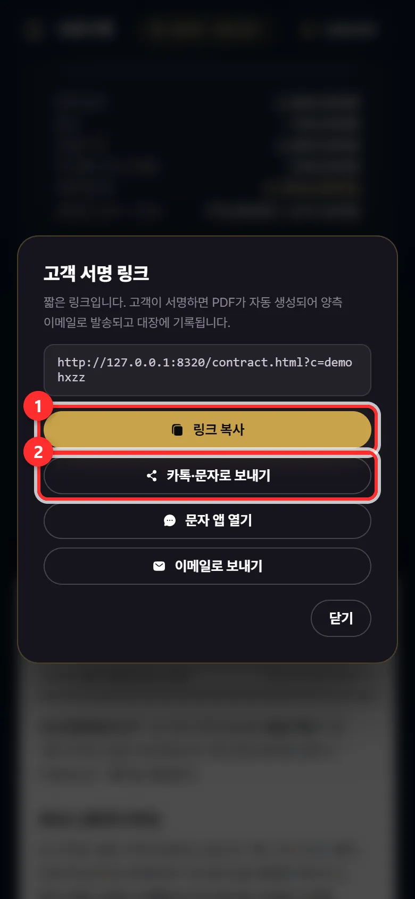
① 링크 복사 ② 카톡 · 문자로 보내기 손님 폰 — 내용 확인 후 서명
손님은 링크를 열어 계약서를 읽고 내용 확인 후 서명하기를 누릅니다. 이름 · 연락처를 확인하고, 네모 칸에 손가락으로 서명, 두 가지 동의에 체크한 뒤 서명하고 계약서 보내기.
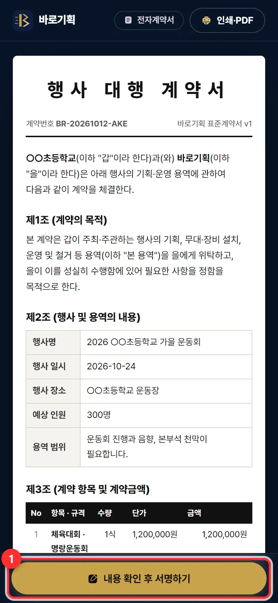
손님이 보는 화면 — 아래 「내용 확인 후 서명하기」 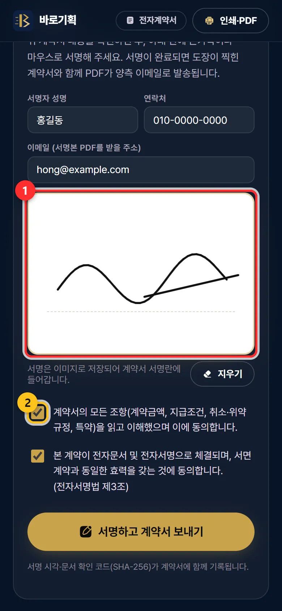
① 손가락 서명(잘못 쓰면 「지우기」) ② 동의 체크 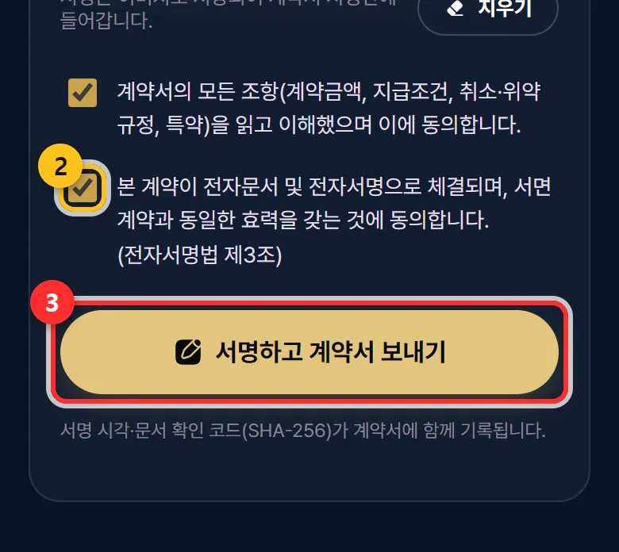
③ 서명하고 계약서 보내기 계약 완료 — PDF 가 메일로 옵니다
손님 화면에 「계약이 체결되었습니다」가 뜨고, 도장 · 서명이 들어간 계약서 PDF 가 대표님 메일과 손님 메일로 갑니다.
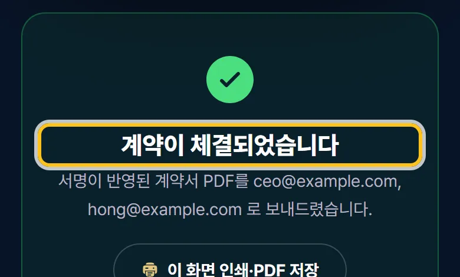
서명이 끝난 손님 화면
자주 하는 실수 · 질문
손님이 서명했는지 어떻게 알아요?
서명이 끝나면 서명된 계약서 PDF 가 대표님 메일로 옵니다. 메일이 없으면 보낸 서명 링크를 대표님이 직접 열어 보세요. 서명이 끝난 계약서는 「서명 완료」 표시와 「이미 서명이 완료된 계약서입니다.」가 나옵니다.
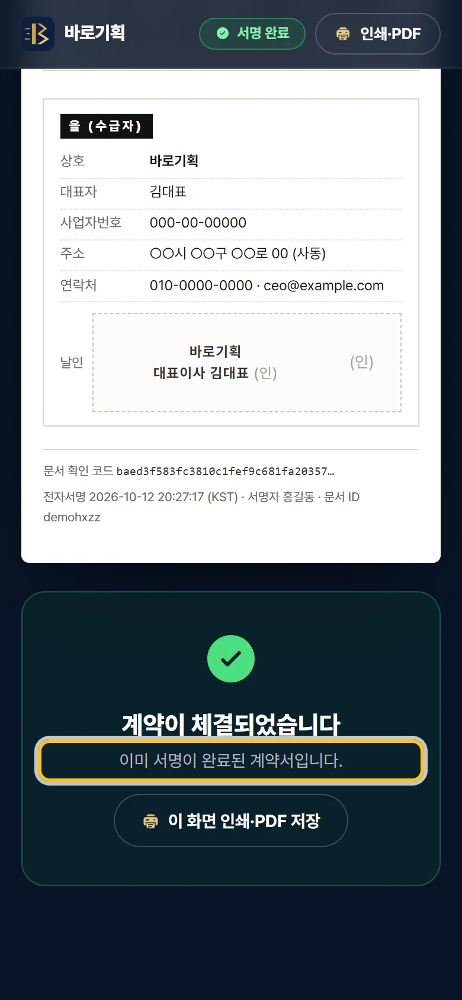
링크를 보낸 뒤 금액을 고쳤어요
서명 링크는 만든 순간의 내용으로 고정됩니다. 고쳤다면 고객 서명 링크 만들기를 다시 눌러 새 링크를 보내고, 손님에게 예전 링크는 쓰지 말라고 알려 주세요.
「갑 담당자과 행사명을 먼저 입력해 주세요」가 나와요
「담당자 (서명자)」나 「행사명」이 비어 있습니다. 둘 다 채우고 다시 누르세요.
손님이 「서명란에 서명해 주세요」가 나온대요
네모 칸 안에 손가락으로 그어야 합니다. 이름 · 연락처 · 두 동의 체크도 모두 있어야 보내집니다.
계약서 종이로도 필요해요
위쪽 인쇄·PDF 단추로 인쇄하거나 PDF 로 저장할 수 있습니다.